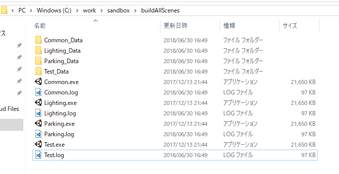

シーンごとにビルド結果の容量を出す
ビルドするとEditor.logにどのアセットがどのくらいの容量使っているかが出力されます。
ただこのログファイルは長く、該当の容量が記載されている箇所を見つけるのは毎回面倒くさいです。
そこで、ログファイルの該当箇所だけを抽出したいです。
また、シーン別々にビルドしてどのシーンが容量を食っているのかもわかるようにしたいと思います。
というわけでエディタ拡張を作りました。
出力先のパス(outputPath)だけ変えてください。
using System;
using System.Collections.Generic;
using System.IO;
using System.Text.RegularExpressions;
using UnityEditor;
using UnityEngine;
public class BuildScenes {
//出力先パス
static string outputPath = @"C:/work/sandbox/buildAllScenes/";
//メニューの BuildにBuild Scenesコマンドを追加
[MenuItem("Build/Build Scenes")]
public static void Build() {
Debug.Log(outputPath);
if (!Directory.Exists(outputPath)) {
Directory.CreateDirectory(outputPath);
}
var scenes = GetScenes();
BuildTarget target;
#if UNITY_EDITOR_WIN
target = BuildTarget.StandaloneWindows;
#else
target = BuildTarget.StandaloneOSXIntel;
#endif
for (var i = 0; i < scenes.Length; i++) {
var name = GetSceneName(scenes[i]);
string errorMessage = BuildPipeline.BuildPlayer(
new string[] { scenes[i] },
outputPath + name + ".exe", // 出力先
target, // ビルド対象プラットフォーム
BuildOptions.Development // ビルドオプション
);
Debug.Log(i + ":build " + name);
var log = AnalyzeLog();
StreamWriter writer = new StreamWriter(outputPath + name + ".log");
writer.WriteLine(log);
writer.Close();
}
}
//シーンのパスからシーン名だけを取得する
static string GetSceneName(string path) {
var a = path.LastIndexOf("/");
var b = path.LastIndexOf(".");
return path.Substring(a + 1, b - a - 1);
}
//ビルド対象のシーン一覧を取得する
static string[] GetScenes() {
List<string> sceneList = new List<string>();
EditorBuildSettingsScene[] scenes = EditorBuildSettings.scenes;
foreach (EditorBuildSettingsScene scene in scenes) {
sceneList.Add(scene.path);
}
return sceneList.ToArray();
}
//ログファイルを解析し、容量部分だけを抽出する
public static string AnalyzeLog() {
string logPath;
#if UNITY_EDITOR_WIN
logPath = @"C:\Users\" + Environment.UserName + @"\AppData\Local\Unity\Editor\Editor.log";
#else
logPath = "~/Library/Logs/Unity/Editor.log";
#endif
FileStream fs = new FileStream(logPath, FileMode.Open, FileAccess.Read, FileShare.ReadWrite);
StreamReader sr = new StreamReader(fs);
string text = sr.ReadToEnd();
sr.Close();
fs.Close();
var matches = new Regex(@"Build Report\s[\s\S]*?-------------------").Matches(text);
if (matches.Count <= 0) {
Debug.LogError("No Log");
return null;
}
return matches[matches.Count - 1].ToString();
}
}
実行すると出力先のフォルダにこんな感じでexeと.logファイルが出力されます。

logの中身はこんな感じです。
Build Report
Uncompressed usage by category:
Textures 6.9 mb 14.1%
Meshes 0.0 kb 0.0%
Animations 0.0 kb 0.0%
Sounds 197.5 kb 0.4%
Shaders 5.0 mb 10.2%
Other Assets 520.2 kb 1.0%
Levels 5.5 kb 0.0%
Scripts 2.7 mb 5.5%
Included DLLs 3.9 mb 8.0%
File headers 47.8 kb 0.1%
Complete size 49.0 mb 100.0%
Used Assets and files from the Resources folder, sorted by uncompressed size:
4.5 mb 9.1% Assets/Mech/PostProcessing/Resources/Shaders/Uber.shader
3.1 mb 6.4% Assets/Fungus/Textures/DialogBoxSliced.png
2.2 mb 4.5% Assets/Fungus/Resources/Sprites/Background.png
使用バージョン
Unity 5.6.4f1
Windowsでのみ確認